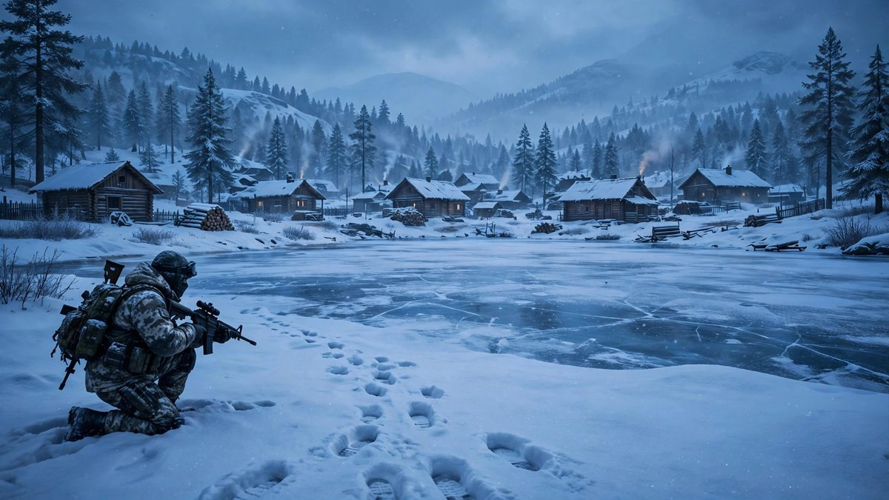

Vikendi Guide: Survive the Snow Map

Vikendi is the snow map of PUBG, a 6 by 6 kilometre island of frozen lakes, snowy hills, small towns and a dinosaur park. It sits between Erangel and Sanhok in size, and its gameplay does too: the pace is faster than Erangel but slower than Sanhok, and fights happen at a mix of ranges. The snow makes everything look beautiful and makes enemies easy to spot, because a dark figure stands out clearly against white ground. Vehicles handle differently on the ice, footprints give away your position, and the cold changes how you should play. This guide covers the best landing spots, the weapons that work in the snow, and the small details that separate good Vikendi players from dead ones.
Where to Land on Vikendi
Castle is the most iconic landing spot on Vikendi. The big stone fortress in the centre of the map has strong loot and draws two or three squads, with fights across courtyards, walls and staircases that reward good movement. Dino Park is the other popular hot drop: the amusement park buildings hold plenty of rifles and attachments, and the maze-like layout creates fun close-quarters fights. For a balanced start, try Goroka, Cement Factory or Volnova. Goroka has dense loot in a small area, the Cement Factory offers great gear and a strong position near the centre, and Volnova is quiet enough to loot in peace. Cosmodrome in the north-east is worth a visit for its loot, but it is far from the centre, so grab a vehicle early. Small villages like Trevno and Movatra are good safe drops for beginners and rank pushers, with enough loot to get you through the early game.
Footprints and sound
- Walking through snow leaves footprints that enemies can follow, so change direction after crossing open snow.
- Footsteps are louder on frozen ground; crouch-walk when you are close to enemy compounds.
- Check the snow behind you when you hold a position; fresh tracks mean someone is nearby.
- Use the white terrain to your advantage: a white or grey outfit blends in better than a dark one.
Best Weapons for Vikendi
Vikendi fights happen at mixed ranges, so a versatile loadout works best. The M416 with a 3x scope is an excellent all-rounder, and the G36C is a strong alternative that spawns only on this map. For longer sightlines across the frozen lakes and open snowfields, carry a DMR like the SLR or Mini14 with a 4x scope. The MP5K is a solid close-range SMG that also spawns only on Vikendi, and the PP-19 Bizon is a good early-game option. The map's exclusive snowmobile is fun but loud, so use it for rotations and ditch it before the final circles. One weapon to look out for is the Mk12, a DMR that spawns on Vikendi and performs well at mid range. Whatever you pick, make sure you have a scope: the open snow gives you long sightlines, and an unscoped rifle wastes them.
Vehicles and the Snow
Vehicles on Vikendi behave differently. Cars slide on ice and snow, and the snowmobile is fast but offers no protection at all. The UAZ and the pickup are the safest choices for rotations, and the coupe is fast on the roads that connect the towns. Always check the zone early on Vikendi, because the map's hills and lakes slow you down more than you expect. If the circle ends on a frozen lake, get there first and take the high ground on the shore; the team that arrives late has to cross the open ice under fire. Keep a vehicle until the late game if you can, since a car makes an excellent piece of cover in the final circle on the open snow.
Zone Play in the Snow
The white terrain makes Vikendi's endgame unique. Enemies are easy to spot at range, so the final circles are often decided by who sees whom first. Use a scope to scan the snow before you move, and move from rock to rock rather than sprinting across open ground. Buildings are less common in the late game than on Erangel, so learn to use ridges, rocks and the occasional tree as your cover. Healing matters more here because fights are often trades at range: carry extra first aid kits and boost items, and use the time between fights to top up your boost bar. If you are caught in the open with no cover, going prone in a dip in the snow can hide you surprisingly well, but do not rely on it against a team that already knows your position.
Frequently Asked Questions
What is the best landing spot on Vikendi?
Castle has the best loot and the most exciting fights, while Dino Park is a close second. For a safer start with good gear, land at Goroka, Cement Factory or Volnova.
Do footprints really matter on Vikendi?
Yes. Walking through snow leaves visible tracks that experienced players follow to find you. Change direction after crossing open snow, and crouch-walk near enemy positions to stay quiet.
Which weapons spawn only on Vikendi?
The G36C assault rifle and the MP5K submachine gun are Vikendi-exclusive spawns, and the Mk12 DMR appears on the map too. The snowmobile is also unique to Vikendi.
Download PUBG: Battlegrounds
Play free on PC or mobile — download the official game from the links below.